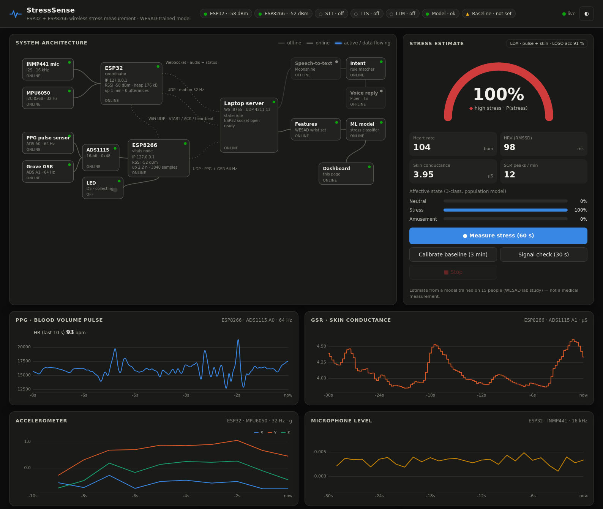
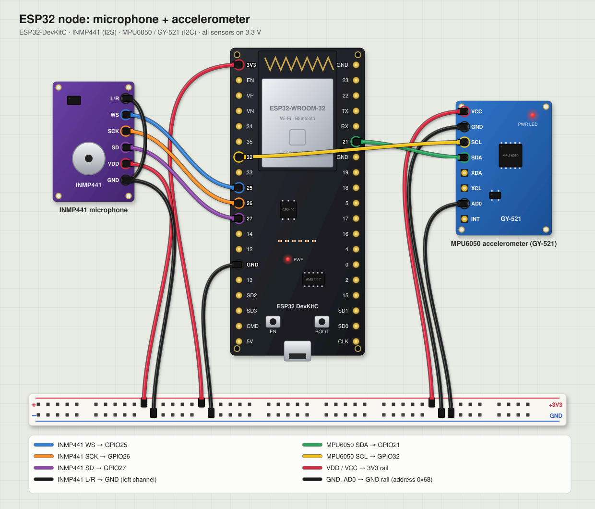
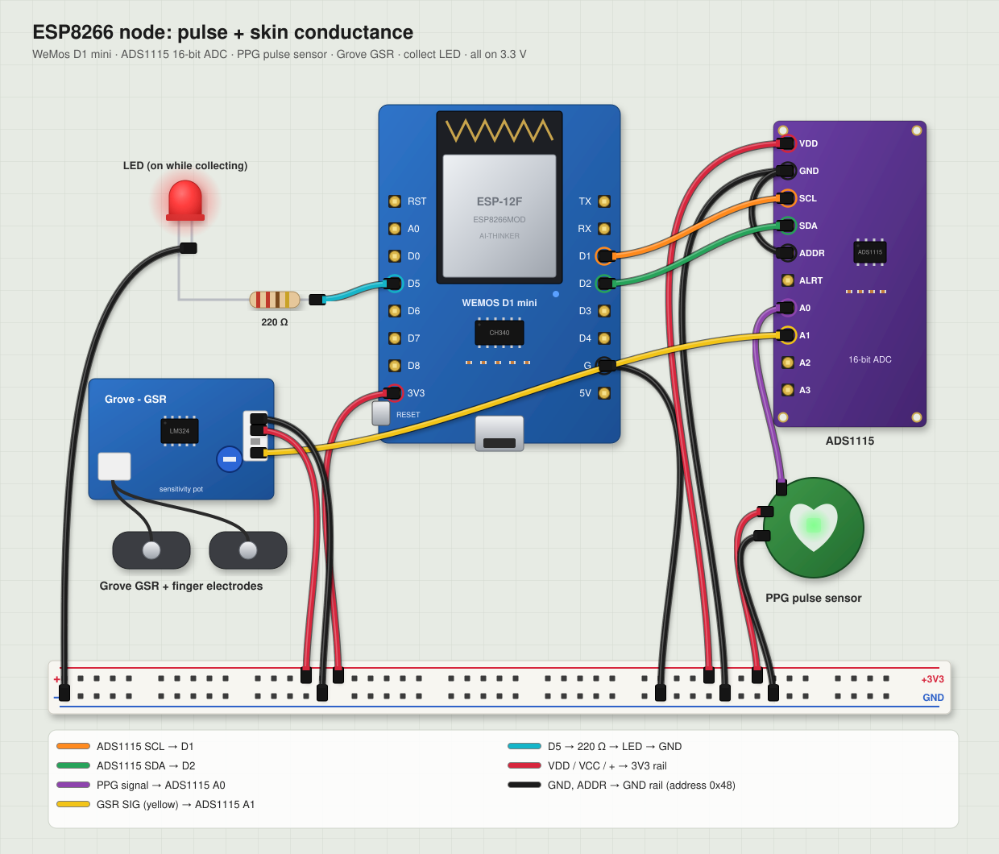

Say “measure my stress level”. An ESP32 hears you and tells an ESP8266 over WiFi to start. For 60 seconds both boards stream your pulse, skin conductance and motion to a laptop, where a model trained on the WESAD stress dataset estimates how stressed you are. The answer is spoken back and shown on a live dashboard.

Stress shows up in the body before we notice it: the heart beats faster and less variably, and the skin sweats more. This project measures those signals with low-cost sensors, sends them over WiFi, and classifies them with a model trained on a published lab study, triggered entirely by voice.
The ESP32's microphone detects speech on the device and streams it to the laptop, where speech-to-text and a command matcher recognise the request.
The laptop tells the ESP32 to start. The ESP32 relays START to the ESP8266 over UDP and retries until it gets an ACK.
For 60 s the ESP8266's LED is on while it samples pulse and skin conductance at 64 Hz. The ESP32 samples motion at 32 Hz.
Lost packets are filled in, units are converted, and 44 physiological features are extracted with the same code used for training.
The classifier returns a stress probability and level. The laptop speaks it and the dashboard shows every detail.
The two microcontrollers are never wired together. Everything they exchange, with each other and with the laptop, travels over WiFi. Dashed blue lines are wireless links.
| Component | Hardware / technology | Role |
|---|---|---|
| ESP32 node | ESP32-WROOM, INMP441 microphone (I2S), MPU6050 (I2C) | Voice capture with on-device speech detection, motion sensing, measurement coordinator |
| ESP8266 node | WeMos D1 mini, ADS1115 16-bit ADC, analog PPG, Grove GSR, LED | Physiological sensing at 64 Hz, "collecting" indicator |
| Laptop server | Python asyncio, websockets, Starlette / Uvicorn | Device hub, measurement orchestration, feature extraction, inference |
| Voice | Moonshine (speech-to-text), Piper (text-to-speech), optional local LLM via Ollama | Spoken commands and replies |
| Machine learning | scikit-learn: AdaBoost, LDA, Random Forest, Decision Tree, kNN | Stress classification trained on WESAD |
| Dashboard | HTML / CSS / JavaScript, SVG diagram, canvas charts, WebSocket | Live visualisation and control in the browser |
Every sensor runs at 3.3 V. The ESP8266 has only one analog input, but the pulse sensor and the skin-conductance sensor are both analog, so an ADS1115 16-bit ADC digitises both and hands the values over I2C.


| Part | Qty | Purpose |
|---|---|---|
| ESP32 DevKitC (WROOM) | 1 | microphone, motion, coordinator |
| ESP8266 WeMos D1 mini | 1 | vitals node |
| INMP441 I2S microphone | 1 | voice commands |
| MPU6050 (GY-521) | 1 | 3-axis accelerometer + gyroscope |
| ADS1115 16-bit ADC | 1 | reads both analog sensors |
| Analog PPG pulse sensor | 1 | blood volume pulse → heart rate, HRV |
| Seeed Grove GSR + electrodes | 1 | skin conductance (sweat response) |
| LED + 220 Ω resistor | 1 | lit while collecting |
| Breadboards, jumpers, 2 USB cables, velcro | — | assembly and wearing |
| Device | Connection |
|---|---|
| ESP32 | |
| INMP441 | SCK→GPIO26 · WS→GPIO25 · SD→GPIO27 · L/R→GND · VDD→3V3 |
| MPU6050 | SDA→GPIO21 · SCL→GPIO32 · AD0→GND · VCC→3V3 |
| Status LED | GPIO2 (on-board), on while measuring |
| ESP8266 (D1 mini) | |
| ADS1115 | SDA→D2 · SCL→D1 · ADDR→GND · VDD→3V3 |
| PPG sensor | signal→ADS1115 A0 · +→3V3 · −→GND |
| Grove GSR | SIG→ADS1115 A1 · VCC→3V3 · GND→GND |
| LED | D5 → 220 Ω → LED → GND |
ESP32 GPIO 6–11 (labelled SD0–SD3, CMD, CLK) are wired to the flash chip inside the module. Anything connected there stops the board from being programmed.
ESP32 GPIO 0/2/5/12/15 and ESP8266 D3/D4/D8 set the boot mode. GPIO12 even selects the flash voltage, so sensors stay off these pins.
ESP32 GPIO 34–39 can't drive a signal or pull up, so they can't be an I2C clock. SCL sits on GPIO32 instead, next to them on the header.
WESAD's wrist device was worn on the non-dominant wrist, so we copy that: the PPG sits on a fingertip, the GSR electrodes go on two other fingers of the same hand, and the MPU6050 is strapped to the back of that wrist. During a measurement you sit, keep the hand still and stay silent.
The ADS1115 count is converted to the Grove's 10-bit-equivalent reading X. The Grove formula
R = (1024 + 2X)·10000 / (Xcal − X) gives the skin resistance, and 106/R gives the conductance in µS.
Xcal is the not-worn reading, stored once from the dashboard.
Both sketches build in the Arduino IDE. The ESP32 uses FreeRTOS tasks so that audio is never blocked by WiFi; the ESP8266 runs one non-blocking loop with microsecond-timed sampling.
| Task | Core / priority | Job |
|---|---|---|
| audio | 1 / 10 | Reads 20 ms I2S frames, removes DC offset, runs an energy-based speech detector with an adaptive noise floor and a 300 ms pre-roll |
| net | 0 / 5 | Owns the WebSocket; sends audio in 60 ms batches; a 1.3 s queue rides out WiFi stalls |
| coordinator | 0 / 3 | Samples the MPU6050 at 32 Hz, finds the ESP8266, relays START with retries, reports status every second |
STARTs, stops on STOP or after the duration, then reports DONEWiFi name, password and laptop IP live in a gitignored .env file. A script generates a secrets.h header for each board,
which config.h includes at compile time. If it's missing, the build stops with instructions instead of producing firmware that can't connect.
cp .env.example .env # WIFI_SSID, WIFI_PASSWORD, LAPTOP_IP
python3 tools/make_secrets.py # → src/secrets.h, esp8266_vitals/src/secrets.hCommands use a reliable relay with acknowledgements; sensor data uses lightweight UDP streams whose sample indices reveal every lost packet. If the relay fails, the laptop reaches the ESP8266 directly.
| Port | Protocol | Content |
|---|---|---|
| 8765 | WebSocket | ESP32 ⇄ laptop: audio, status, commands |
| 4210 | UDP | → ESP8266: START, STOP |
| 4211 | UDP | ESP8266 → laptop: PPG + GSR |
| 4212 | UDP broadcast | ESP8266 heartbeat, ACK, DONE |
| 4213 | UDP | ESP32 → laptop: MPU6050 |
| 8080 | HTTP + WebSocket | dashboard in the browser |
START is re-sent every 250 ms (up to 6×) until ACK, alternating unicast and broadcast.START itself.P,<id>,<first_index>,8,<ppg>,<gsr>,… ESP8266 data, 125 ms
A,<id>,<first_index>,8,<ax>,<ay>,<az>,… ESP32 motion, 250 ms
HB,esp8266,<rssi>,<collecting>,… heartbeat, 1 HzSpeech detection runs on the ESP32: only actual speech is streamed, starting 300 ms before the detected onset so no word gets cut off. On the laptop, Moonshine turns the audio into text.
Commands are matched with fuzzy rules, not by a language model, so they work every time, even when the speech-to-text hears "measure my dress level". Anything else is answered by an optional local assistant.
While the laptop speaks, it mutes the ESP32's microphone, so the system never hears and answers its own voice.
| Say | Effect |
|---|---|
| “measure my stress level” | 60 s measurement → spoken result |
| “calibrate my baseline” | 3 min relaxed recording → personal baseline |
| “check my signals” | 30 s live signal check, no prediction |
| “stop” | cancels a running measurement |
WESAD (Schmidt et al., 2018) recorded 15 people during a neutral baseline, a stress test (the Trier Social Stress Test: a public speech plus mental arithmetic) and an amusement condition. Our sensors match its wrist device, the Empatica E4, so the model is trained on those wrist signals, at the same sampling rates.
| WESAD wrist signal | Our sensor | Rate | Used for |
|---|---|---|---|
| BVP (photoplethysmogram) | analog PPG via ADS1115 | 64 Hz | heart rate, heart-rate variability |
| EDA (µS) | Grove GSR via ADS1115 | 64 → 4 Hz | skin conductance level and responses |
| ACC (g) | MPU6050 | 32 Hz | recorded and shown, not used for the prediction (see below) |
| TEMP | — | — | no sensor |
60 s segments inside each condition, 5 s apart → 6124 windows.
44 features. Heart: HR, SDNN, RMSSD, pNN50, LF/HF power. Skin: level, slope, tonic/phasic split, response peaks. Motion: magnitude, variability.
Optionally express each feature relative to the user's relaxed baseline, which cancels person and sensor offsets.
Five classifiers from the paper. Each is tested on a person it has never seen (leave-one-subject-out).
Leave-one-subject-out: train on 14 people, test on the 15th, repeated for everyone. The scores therefore describe performance on a new person. Black ticks mark the best wrist result reported in the WESAD paper.
best classifier per bar · hover for details
deployed model (AdaBoost, pulse + skin, personal baseline) · share of each true class
stress vs. no stress, deployed model · each bar is one held-out subject
The accelerometer alone reached 87.5 % accuracy, against about 70 % in the paper. WESAD participants moved while giving their stress-test speech, so motion partly gives the label away. A seated, still user would then look unstressed. Pulse and skin alone score the same (94.7 % vs. 94.9 %), so the deployed model ignores motion.
Comparing each person with their own relaxed baseline lifts stress detection from 91.2 % to 94.7 %. Skin conductance gains most (3-class: 60.8 % → 74.0 %), which makes sense: its absolute level differs a lot between people.
As in the paper, amusement is mostly mistaken for baseline: watching funny clips barely changes the body's signals. Stress itself is recognised reliably.
94.7 % against 88.3 % for stress detection, without a temperature sensor. The best model was selected on the same evaluation, so the top figures are slightly optimistic; the paper's figures share that bias.
The browser dashboard connects to the laptop server over a WebSocket and updates many times per second.
Every sensor, board and software stage as a node. Nodes light up when active, wires animate while data flows, and the LED glows during collection.
Gauge with stress probability and level, the 3-class state, heart rate, HRV, skin conductance, and the full table of 44 features.
PPG waveform with running heart rate, skin conductance in µS, 3-axis acceleration and microphone level, with hover read-outs.
RSSI of both boards, sample rate and packet loss per stream, and which path started the measurement (relay or direct).
Transcripts, recognised commands, spoken replies, and a timestamped log of every link event (START, ACK, DONE).
P(stress) of past sessions. Each session's raw signals, features, prediction and link stats are saved for analysis.
The complete guide, with the expected serial output at every step, is STEP_BY_STEP.md. In short:
.env and run tools/make_secrets.py.esp8266_vitals.ino (LOLIN D1 mini) and esp32_voice.ino (ESP32 Dev Module).python3 -m venv venv
venv/bin/pip install -r tools/requirements.txt
venv/bin/python tools/stress_server.py --no-llm
# open http://localhost:8080venv/bin/python -I tools/ml/wesad_extract.py
venv/bin/python -I tools/ml/build_dataset.py
venv/bin/python -I tools/ml/train.py --deploy-features physioThe WESAD dataset is downloaded separately from its authors.
tools/sim_devices.py impersonates both boards with the exact firmware protocol and replays real WESAD recordings, with optional packet loss.
Features computed through the simulated wireless path match the direct computation (heart rate 102.8 vs. 102.9 bpm at 2 % packet loss).